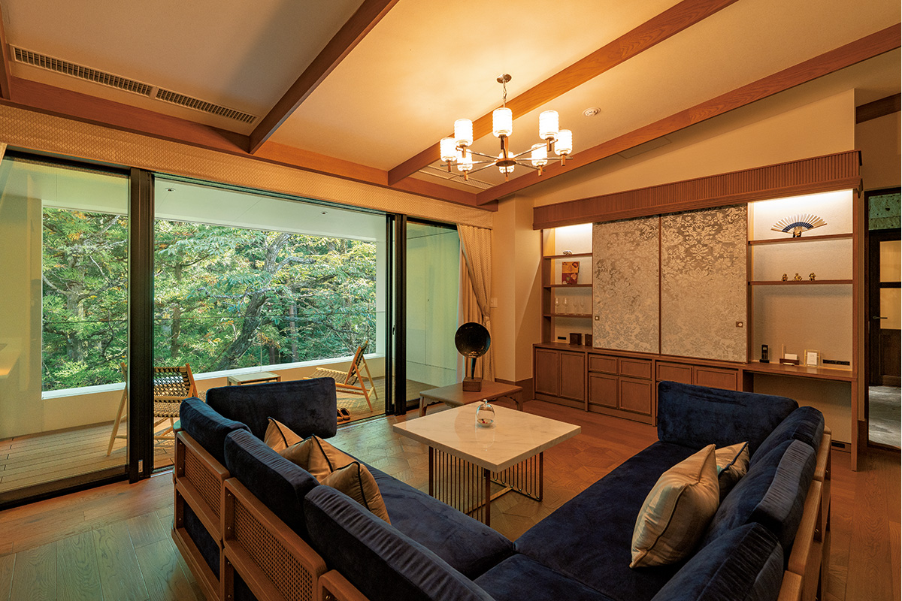
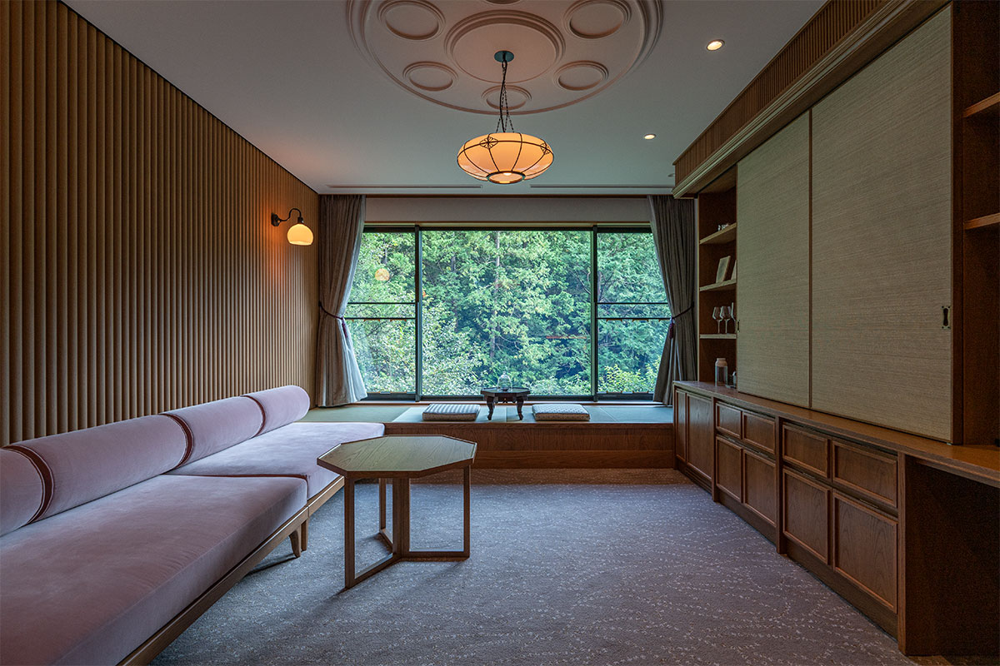
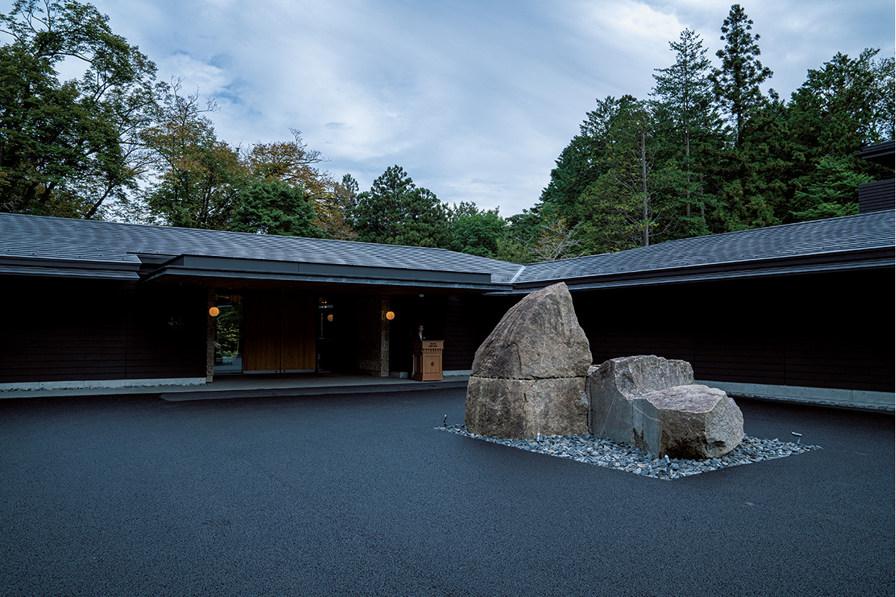
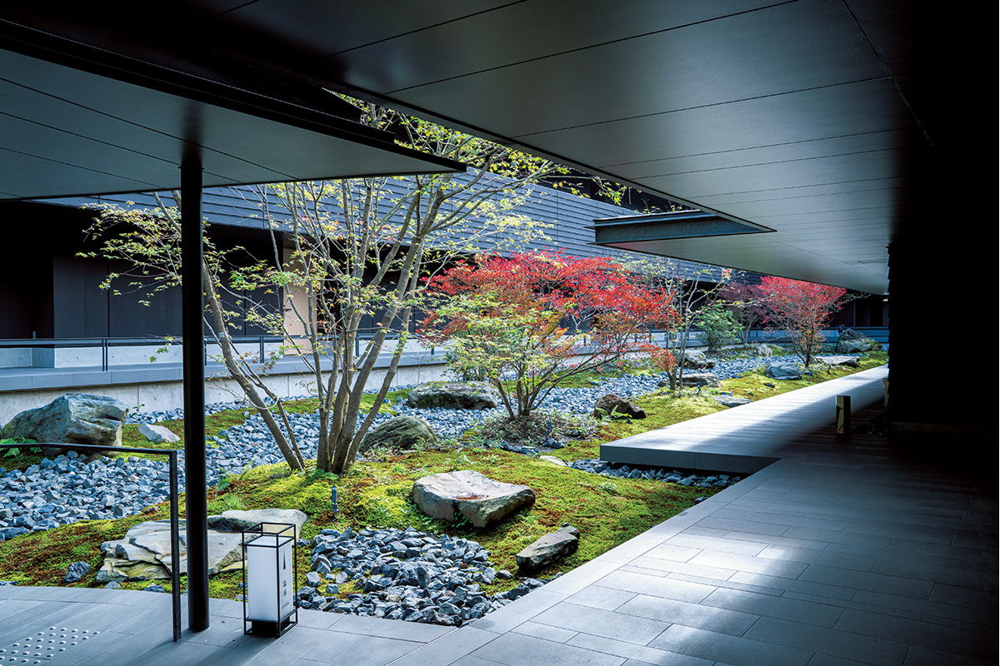
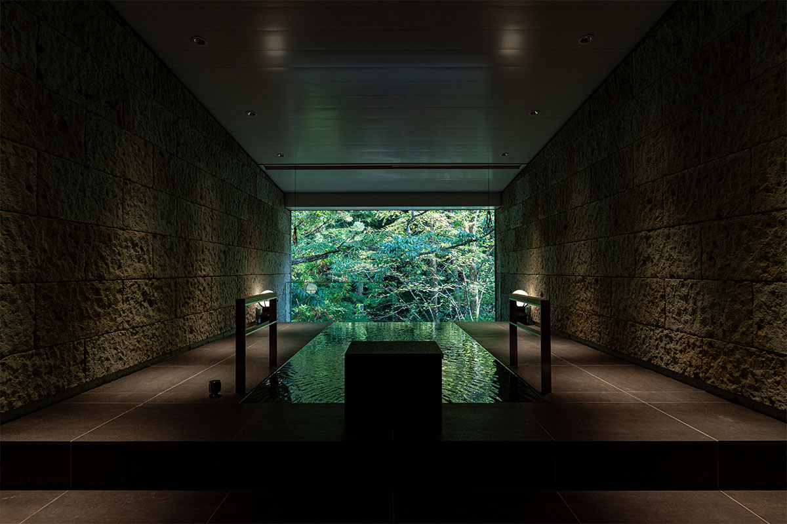
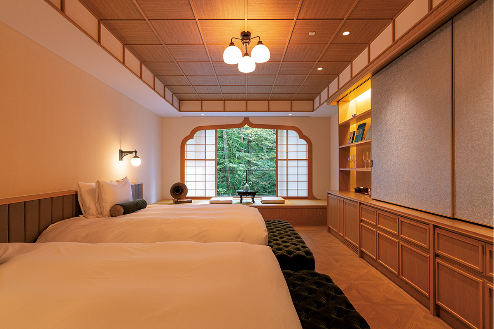
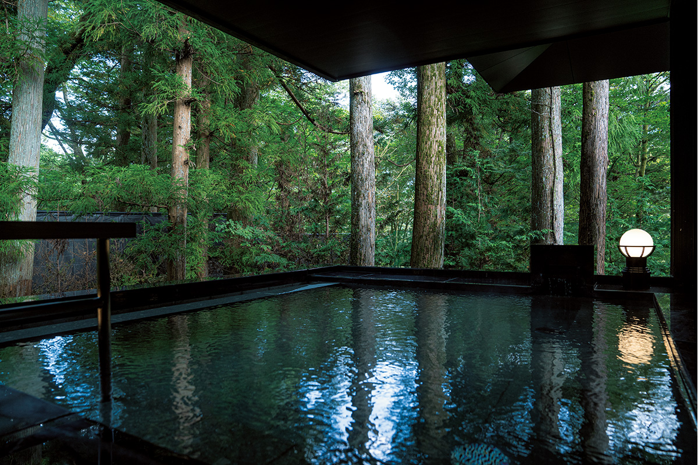
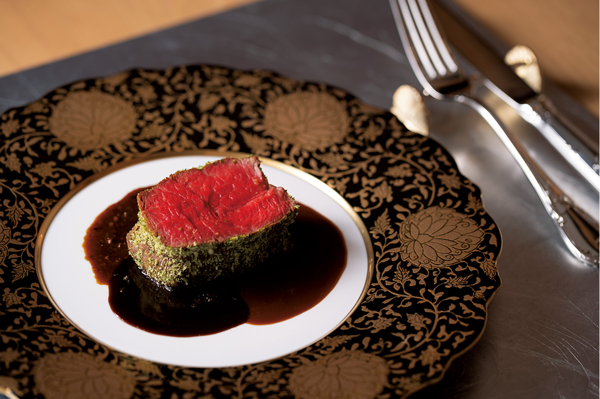
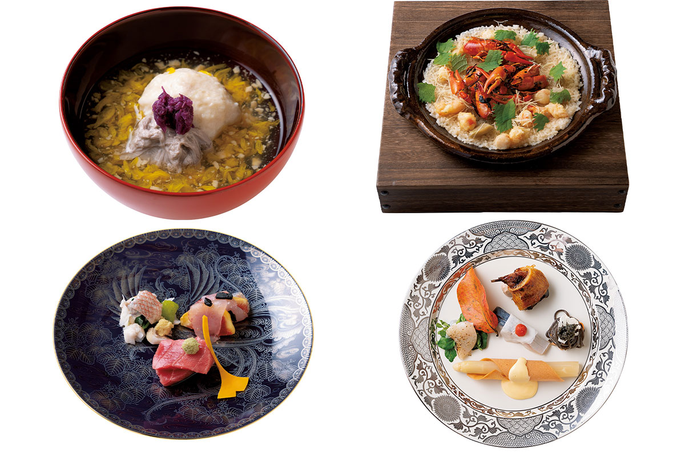
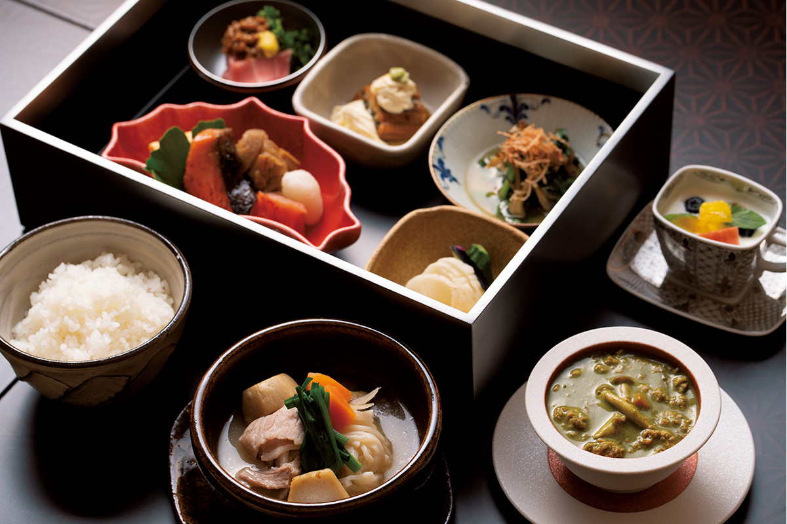

Префектура Тотиги · Никко · где остановиться
«Fufu Никко»: онсэн-гостиница у летней виллы императора рядом с Тосёгу

В Никко есть места, где невольно выпрямляешь спину. Одно из них стоит у старой летней виллы императора, недалеко от святилища Тосёгу: там в октябре 2020 года открылась гостиница «Fufu Никко».
Место
Земля, куда приезжали императоры

Никко, город из списка Всемирного наследия, известен прежде всего святилищем Тосёгу. Во второй половине октября, когда осень здесь наступает стремительно, серпантин Ироха-дзака, ведущий из города к озеру Тюдзэндзи, забит машинами: все едут смотреть на осеннюю листву, одну из самых красивых в Японии. Эти места веками притягивали государственных деятелей, самураев и императоров. Природа вокруг по-прежнему богатая, воздух чистый, а святилище Тосёгу после реставрации снова сияет во всём блеске.
Гостиница стоит в районе Тамодзава, недалеко от Тосёгу, рядом с бывшей летней виллой императора Тайсё. Император Тайсё (1879–1926) правил Японией с 1912 по 1926 год, и вилла Тамодзава была его летней резиденцией. На её месте устроен мемориальный парк, а саму виллу вернули к виду эпохи Тайсё. Прямо у парка 2 октября 2020 года и открылась «Fufu Никко».
Тамодзава лежит чуть ниже того места, где начинается подъём по Ироха-дзака. Здесь течёт прозрачная горная река, а виллу и парк окружает лес из японских кедров Никко, прямых, как мачты. Район стоит на высоте 634 метра над морем, на той же высоте, что и святилище Тосёгу, и в нём чувствуется особое достоинство старой земли.


Девиз гостиницы: «Благородный аромат, изысканное время, открытая святыня». Среди этой природы «Fufu Никко» больше похожа на богатый особняк. В лобби негромко звучит классическая музыка, и для «гостиницы с онсэном» здесь слишком современно: это скорее курорт.
Номера
24 сюиты, и в каждой свой источник
Во все номера подведена вода из собственного источника гостиницы, так что купаться можно сколько угодно и когда угодно. Номеров 24, и все это сюиты, причём ни одна не повторяет другую. В них сохранена красота японского дома, а рядом стоит антикварная мебель, напоминающая о том, как в эпохи Мэйдзи и Тайсё японцы перенимали у Запада комфорт и роскошь. В отделке использованы местные материалы: камень оя, кедр, сосна из Никко. Восток и Запад здесь соединены, и в этом главное очарование гостиницы. Самых просторных сюит «Fufu Luxury Premium Suite» (137,35–143,02 м²) в гостинице две, и в каждой есть каменная ванна полуоткрытого типа и круглая ванна из кипариса хиноки, обе с водой из источника.

Номера попроще тоже не обходятся без собственной ванны с горячей водой. «Precious Suite» устроена как одна большая комната.

Помимо ванн в номерах, в гостинице есть общая купальня. Источник гостиницы называется «Тамодзава онсэн, Fufu Никко-но ю», по составу это щелочной простой источник. Ванна в номере хороша, но в общей купальне, и в крытой, и под открытым небом, совсем другое ощущение простора.

Ужин
Кухня по семидесяти двум сезонам

В гостиницах сети Fufu большое внимание уделяют еде. Компания, которая ими управляет, начинала с ресторанов, и этим здесь гордятся. Каждая гостиница, по её словам, «единственная в своём роде»: повара изучают традиции и кухню своего края и придумывают блюда, которые каждый раз удивляют гостей.
«Fufu Никко» не исключение. Здесь гостей кормят японской кухней и блюдами с плиты тэппанъяки. Главная идея в том, чтобы передать в еде время года по старому японскому календарю, где год делится на 24 сезона и 72 коротких микросезона. За этим стоит старая мысль: еда, приготовленная с пожеланием счастья людям, сама по себе доброе дело.
В японском ресторане «Сэттю» подают собственную версию кайсэки, многоблюдного японского ужина, и посуда должна напоминать гостю о Никко, о Тамодзаве и Тосёгу. Больше всего поражает именно выбор посуды. Яркие, пышные тарелки подчёркивают блюда, а блюда подчёркивают тарелки, и всё вместе напоминает о сияющих золотом постройках Тосёгу.

Продукты привозят со всей страны, по сезону, и много берут в Тотиги. На стол попадают и «три великих деликатеса Японии», которые когда-то подносили роду сёгунов Токугава: морской ёж, карасуми (вяленая икра кефали) и коновата (солёные кишки трепанга). Их сочетают с тремя великими деликатесами мира: икрой, фуа-гра и трюфелями.
Утро
Завтрак из Тотиги и чай у камина
На завтрак тоже подают то, чем славится Тотиги: юбу, натто, мороми (густую соевую заправку), соленья, жареную рыбу и мисо-набэ, горшочек с мисо и множеством начинок. Простой японский завтрак без церемоний хорошо начинает день.

Зимы здесь суровые, поэтому в лаунже горит камин. Можно выпить фирменную смесь чая из листьев, собранных вручную, травяной чай или заказать лёгкий послеобеденный чай. Для курорта такая тишина большая редкость и, пожалуй, главная роскошь.
«Fufu Никко»
- Адрес
- префектура Тотиги, Никко, Хонтё, 1573-8
- Телефон
- +81 288-25-5122
- Номера
- 24
- Цены / Вход
- ночь с ужином и завтраком от 38 650 иен (налоги, сервисный сбор и налог на онсэн включены)
- Заезд / выезд
- 15:00 / 11:00
- Как добраться
- на машине около 30 минут от развязки Уцуномия на Тохоку-дзидося-до; на поезде до станции Тобу-Никко или JR Никко, оттуда около 10 минут на такси
- Сайт
- fufunikko.jp
Фото: Ацуси Ямахира.